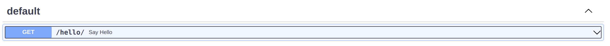
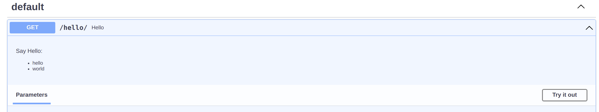
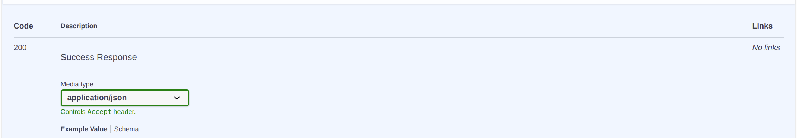
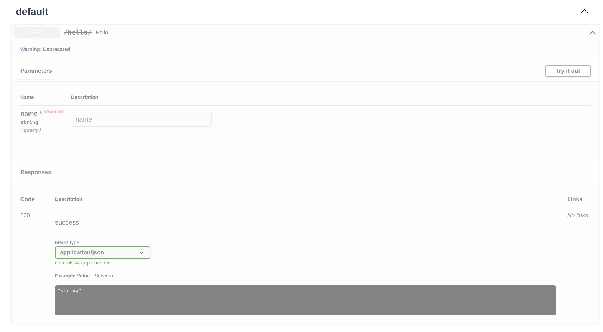

Operations parameters
Doc Enable
You can set doc_enable=False to hide the doc of current api
from flask_sugar import Sugar
app = Sugar(__name__)
@app.get("/demo1", doc_enable=False)
def demo1():
return {"code": 0}
@app.get("/demo2")
def demo2():
return {"code": 0}

Tags
You can group your API operations using the tags argument (list[str]).
from flask_sugar import Sugar
app = Sugar(__name__)
@app.get("/demo1")
def demo1():
return {"code": 0}
@app.get("/demo2", tags=["Hello"])
def demo2():
return {"code": 0}
Tagged operations may be handled differently by various tools and libraries. For example, the Swagger UI uses tags to group the displayed operations.

Blueprint tags
You can use tags argument to apply tags to all operations declared by Blueprint, Routes inherit the Blueprint's tags, you can set extends_tags=False to disable it:
from flask_sugar import Sugar, Blueprint
app = Sugar(__name__)
hello_bp = Blueprint("hello", __name__, tags=["world"])
@hello_bp.get("/demo1")
def demo1():
return {"code": 0}
@hello_bp.get("/demo2", extends_tags=False)
def demo2():
return {"code": 0}
app.register_blueprint(hello_bp)
Note
the Blueprint tags default value is [name of the Blueprint]
Summary
Summary is a human-readable name for your operation.
By default, it's generated by capitalizing your operation function name:
from flask_sugar import Sugar
app = Sugar(__name__)
@app.get("/hello/")
def hello(name: str):
return {"hello": name}

If you want to override it or translate it to other language, use the summary argument in the api decorator.
from flask_sugar import Sugar
app = Sugar(__name__)
@app.get("/hello/", summary="Say Hello")
def hello(name: str):
return {"hello": name}

Description
If you need to provide more information about your operation, use either the description argument or normal Python docstrings:
@app.get("/hello/", description="say hello to any one")
def hello(name: str):
return {"hello": name}

When you need to provide a long multi line description, you can use Python docstrings for the function definition:
@app.get("/hello/")
def hello(name: str):
"""
Say Hello:
- hello
- world
"""
return {"hello": name}

Response Description
If you need to provide more information about your response, use either the response_description argument:
@app.get("/hello/", response_description="Success Response")
def hello(name: str):
return {"hello": name}

Deprecated
If you need to mark an operation as deprecated without removing it, use the deprecated argument:
@app.get("/hello/", deprecated=True)
def hello(name: str):
return {"hello": name}
It will be marked as deprecated in the JSON Schema and also in the interactive OpenAPI docs:

OperationId
The OpenAPI operationId is an optional unique string used to identify an operation. If provided, these IDs must be unique among all operations described in your API.
By default, Flask Sugar sets it to view endpoint + __ + http method in lower.
If you want to set it individually for each operation, use the operation_id argument:
@app.post("/tasks", operation_id="create_task")
def new_task():
...
Security
A declaration of which security mechanisms can be used for this operation. The list of values includes alternative security requirement objects that can be used. Only one of the security requirement objects need to be satisfied to authorize a request. To make security optional, an empty security requirement ({}) can be included in the array. This definition overrides any declared top-level security. To remove a top-level security declaration, an empty array can be used.
Extra
The rest of the Operation properties can override all the properties previously set